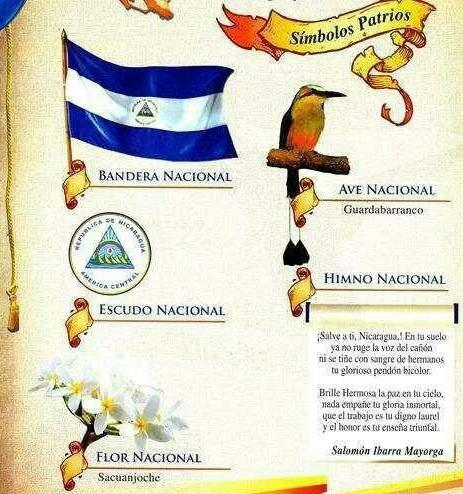
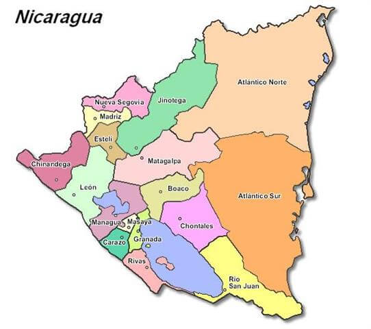
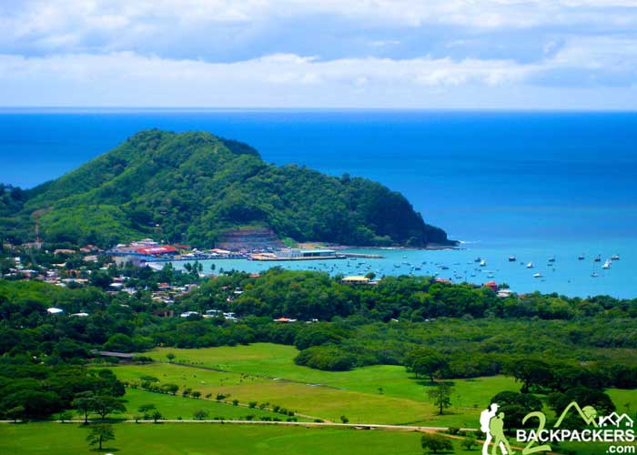
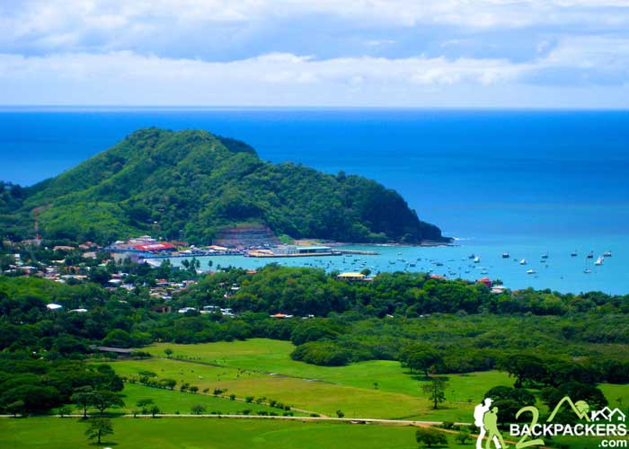

Historia
En 1524, las poblaciones de Granada y León fueron fundadas por Francisco Hernández de Córdoba en la zona de que hoy es Nicaragua. En 1528 la Corona española erigió la Provincia de Nicaragua, que posteriormente pasó a depender de la Audiencia y Capitanía General de Guatemala, dependiente del Virreinato de la Nueva España hasta 1812. En 1803, por intermedio de la Real Orden del 20 de noviembre, el rey de España ordenó segregar de la antigua Capitanía General de Guatemala, la Costa de Mosquitos como las islas de San Andrés y agregarlas al Virreinato de Nueva Granada. En 1894, tropas nicaragüenses al mando de Rigoberto Cabezas ocuparon la región, que fue organizada como el Departamento de Zelaya, dividido a fines del siglo XVII en dos regiones (Región Autónoma del Atlántico Norte y la Región Autónoma del Atlántico Sur). En 1812 las Cortes de Cádiz erigieron la Provincia de Nicaragua y Costa Rica (separada de la Provincia de Guatemala), y con cabecera en la ciudad de León. Esta provincia duró hasta 1814, año en que se restableció el reino de Guatemala. En 1820, al restablecerse el régimen constitucional, resurgió la Provincia de Nicaragua y Costa Rica, que estaba dividida en siete partidos. .
Símbolos patrios
Extensión Territorial y Departamentos
Uno de los países más grandes de Centroamérica es Nicaragua, con una extensión territorial de 129.494 km2 y con una población de 6.327.927 habitantes. En su frontera al Norte se encuentra la República de Honduras, al Sur Costa Rica, al Este el mar Caribe y al Oeste el Océano Pacífico.
Lugares Turísticos

 
